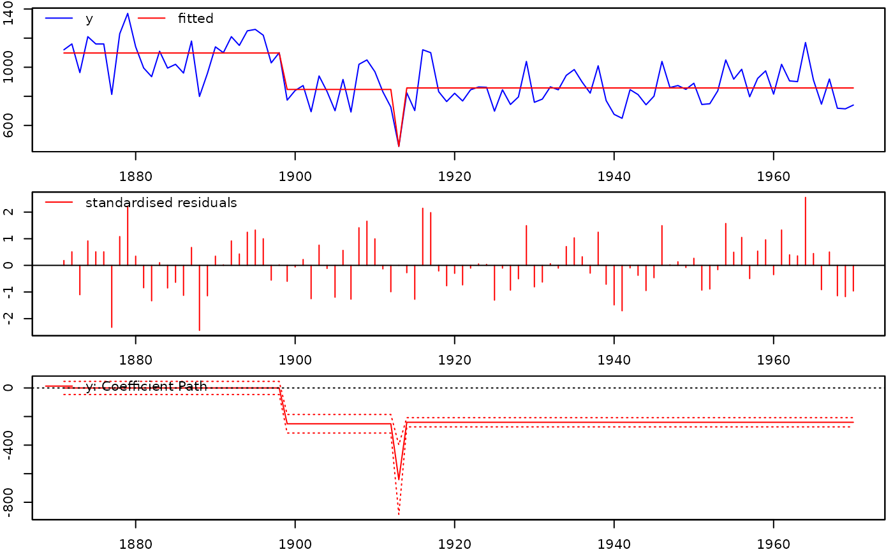

Indicator Saturation
isat.RdThe isat function undertakes multi-path indicator saturation to detect outliers and mean-shifts using impulses (IIS), step-shifts (SIS), or trend-indicators (TIS). Indicators are partitioned into blocks and selected over at a chosen level of significance (t.pval) using the getsm function.
Usage
isat(y, ...)
##default S3 method:
# Default S3 method
isat(y, mc=TRUE, ar=NULL, ewma=NULL, mxreg=NULL, iis=FALSE, sis=TRUE,
tis=FALSE, uis=FALSE, blocks=NULL, ratio.threshold=0.8, max.block.size=30,
t.pval=0.001, wald.pval=t.pval,
vcov.type= c("ordinary","white","newey-west"), do.pet=FALSE, ar.LjungB=NULL,
arch.LjungB=NULL, normality.JarqueB=NULL, info.method=c("sc","aic","hq"),
user.diagnostics=NULL, user.estimator=NULL, gof.function=NULL,
gof.method = c("min", "max"), include.gum=NULL, include.1cut=FALSE,
include.empty=FALSE, max.paths=NULL, parallel.options=NULL, turbo=FALSE,
tol=1e-07, LAPACK=FALSE, max.regs=NULL, print.searchinfo=TRUE, plot=NULL,
alarm=FALSE, ...)
##S3 method for objects of class 'lm':
# S3 method for class 'lm'
isat(y, ar=NULL, ewma=NULL, iis=FALSE, sis=TRUE,
tis=FALSE, uis=FALSE, blocks=NULL, ratio.threshold=0.8, max.block.size=30,
t.pval=0.001, wald.pval=t.pval,
vcov.type= c("ordinary","white","newey-west"), do.pet=FALSE, ar.LjungB=NULL,
arch.LjungB=NULL, normality.JarqueB=NULL, info.method=c("sc","aic","hq"),
user.diagnostics=NULL, user.estimator=NULL, gof.function=NULL,
gof.method = c("min", "max"), include.gum=NULL, include.1cut=FALSE,
include.empty=FALSE, max.paths=NULL, parallel.options=NULL, turbo=FALSE,
tol=1e-07, LAPACK=FALSE, max.regs=NULL, print.searchinfo=TRUE, plot=NULL,
alarm=FALSE, ...)
##S3 method for objects of class 'arx':
# S3 method for class 'arx'
isat(y, mc=TRUE, ar=NULL, ewma=NULL, iis=FALSE, sis=TRUE,
tis=FALSE, uis=FALSE, blocks=NULL, ratio.threshold=0.8, max.block.size=30,
t.pval=0.001, wald.pval=t.pval,
vcov.type= c("ordinary","white","newey-west"), do.pet=FALSE, ar.LjungB=NULL,
arch.LjungB=NULL, normality.JarqueB=NULL, info.method=c("sc","aic","hq"),
user.diagnostics=NULL, user.estimator=NULL, gof.function=NULL,
gof.method = c("min", "max"), include.gum=NULL, include.1cut=FALSE,
include.empty=FALSE, max.paths=NULL, parallel.options=NULL, turbo=FALSE,
tol=1e-07, LAPACK=FALSE, max.regs=NULL, print.searchinfo=TRUE, plot=NULL,
alarm=FALSE, ...)Arguments
- y
numeric vector, time-series,
zoo, or object of classlmorarx. Missing values in the beginning and at the end of the series is allowed, as they are removed with thena.trimcommand- mc
logical.
TRUE(default) includes an intercept in the mean specification, whereas FALSE does not- ar
integer vector, say, c(2,4) or 1:4. The AR-lags to include in the mean specification
- ewma
either NULL (default) or a list with arguments sent to the
eqwmafunction. In the latter case a lagged moving average of y is included as a regressor- mxreg
numeric vector or matrix, say, a
zooobject, of conditioning variables. Note that missing values in the beginning or at the end of the series is allowed, as they are removed with thena.trimcommand. Note also that, if bothyandmxregarezooobjects, then their samples are chosen to match- iis
logical. If
TRUE, impulse indicator saturation is performed.- sis
logical. If
TRUE, step indicator saturation is performed.- tis
logical. If
TRUE, trend indicator saturation is performed.- uis
a matrix of regressors, or a list of matrices.
- blocks
NULL(default), an integer (the number of blocks) or a user-specifiedlistthat indicates how blocks should be put together. IfNULL, then the number of blocks is determined automatically- ratio.threshold
Minimum ratio of variables in each block to total observations to determine the block size, default=0.8. Only relevant if blocks =
NULL- max.block.size
Maximum size of block of variables to be selected over, default=30. Block size used is the maximum of given by either the ratio.threshold and max.block.size
- t.pval
numeric value between 0 and 1. The significance level used for the two-sided regressor significance t-tests
- wald.pval
numeric value between 0 and 1. The significance level used for the Parsimonious Encompassing Tests (PETs)
- vcov.type
the type of variance-covariance matrix used. If NULL (default), then the type used is that of the 'arx' object. This can be overridden by either "ordinary" (i.e. the ordinary variance-covariance matrix) or "white" (i.e. the White (1980) heteroscedasticity robust variance-covariance matrix)
- do.pet
logical. If
TRUE, then a Parsimonious Encompassing Test (PET) against the GUM is undertaken at each regressor removal for the joint significance of all the deleted regressors along the current path. If FALSE (default), then a PET is not undertaken at each regressor removal. By default, the numeric value is the same as that oft.pval- ar.LjungB
a two-item list with names
lagandpval, or NULL (default). In the former caselagcontains the order of the Ljung and Box (1979) test for serial correlation in the standardised residuals, andpvalcontains the significance level. Iflag=NULL(default), then the order used is that of the estimated 'arx' object. Ifar.Ljungb=NULL, then the standardised residuals are not checked for serial correlation- arch.LjungB
a two-item list with names
lagandpval, or NULL (default). In the former case,lagcontains the order of the Ljung and Box (1979) test for serial correlation in the squared standardised residuals, andpvalcontains the significance level. Iflag=NULL(default), then the order used is that of the estimated 'arx' object. Ifarch.Ljungb=NULL, then the standardised residuals are not checked for ARCH- normality.JarqueB
NULL(the default) or a value between 0 and 1. In the latter case, a test for non-normality is conducted using a significance level equal tonormality.JarqueB. IfNULL, then no test for non-normality is conducted- info.method
character string, "sc" (default), "aic" or "hq", which determines the information criterion to be used when selecting among terminal models. The abbreviations are short for the Schwarz or Bayesian information criterion (sc), the Akaike information criterion (aic) and the Hannan-Quinn (hq) information criterion
- user.diagnostics
NULLor alistwith two entries,nameandpval, see theuser.funargument indiagnostics- user.estimator
NULLor alistwith at least one entry,name, see theuser.estimatorargument ingetsFun- gof.function
NULLor alistwith at least one entry,name, see theuser.estimatorargument ingetsFun- gof.method
NULLor acharacterthat determines whether the best Goodness-of-Fit is a minimum or maximum- include.gum
ignored (temporarily deprecated)
- include.1cut
logical. If
TRUE, then the 1-cut model is included among the terminal models, if it passes the diagnostic tests, even if it is not equal to one of the terminals. If FALSE (default), then the 1-cut model is not included (unless it is one of the terminals)- include.empty
logical. If
TRUE, then an empty model is included among the terminal models, if it passes the diagnostic tests, even if it is not equal to one of the terminals. If FALSE (default), then the empty model is not included (unless it is one of the terminals)- max.paths
NULL(default) or an integer indicating the maximum number of paths to search- parallel.options
NULLor an integer, i.e. the number of cores/threads to be used for parallel computing (implemented w/makeClusterandparLapply)- turbo
logical. If
TRUE, then (parts of) paths are not searched twice (or more) unnecessarily, thus yielding a significant potential for speed-gain. However, the checking of whether the search has arrived at a point it has already been comes with a slight computational overhead. Accordingly, ifturbo=TRUE, then the total search time might in fact be higher than ifturbo=FALSE. This happens if estimation is very fast, say, less than quarter of a second. Hence the default isFALSE- tol
numeric value (default = 1e-07). The tolerance for detecting linear dependencies in the columns of the regressors (see
qrfunction). Only used if LAPACK is FALSE (default)- LAPACK
logical. If
TRUE, then use LAPACK. IfFALSE(default), then use LINPACK (seeqrfunction)- max.regs
integer. The maximum number of regressions along a deletion path. It is not recommended that this is altered
- print.searchinfo
logical. If
TRUE(default), then a print is returned whenever simiplification along a new path is started, and whenever regressors are dropped due to exact multicolinearity- plot
NULL or logical. If
TRUE, then the fitted values and the residuals of the final model are plotted after model selection. If NULL (default), then the value set byoptionsdetermines whether a plot is produced or not.- alarm
logical. If
TRUE, then a sound is emitted (in order to alert the user) when the model selection ends- ...
further arguments passed to or from other methods
Details
Multi-path indicator saturation using impulses (IIS), step-shifts (SIS), or trend-indicators (TIS). Indicators are partitioned into sequential blocks (as of beta version 0.7) where the block intervals are defined by the ratio of variables to observations in each block and a specified maximum block size. Indicators are selected over using the getsm function. Retained indicators in each block are combined and re-selected over. Fixed covariates that are not selected over can be included in the regression model either in the mxreg matrix, or for auto-regressive terms through the ar specification. See Hendry, Johansen and Santos (2007) and Castle, Doornik, Hendry, and Pretis (2015)
References
Castle, Jennifer, L., Doornik, Jurgen, A., Hendry, David F., and Pretis, Felix (2015): 'Detecting Location Shifts during Model Selection by Step-Indicator Saturation', Econometrics, vol 3:2, 240-264.
Hendry, David, F., Johansen, Soren, and Santos, Carlos (2007): 'Automatic selection of indicators in a fully saturated regression'. Computational Statistics, vol 23:1, pp.317-335.
Pretis, Felix, Reade, James and Sucarrat, Genaro (2018): 'Automated General-to-Specific (GETS) Regression Modeling and Indicator Saturation for Outliers and Structural Breaks'. Journal of Statistical Software 86, Number 3, pp. 1-44
Author
Jonas Kurle, https://www.jonaskurle.com/
Felix Pretis, http://www.felixpretis.org/
James Reade, https://sites.google.com/site/jjamesreade/
Moritz Schwarz, https://www.inet.ox.ac.uk/people/moritz-schwarz/
Genaro Sucarrat http://www.sucarrat.net/
See also
Extraction functions for 'isat' objects: coef.isat, fitted.isat, paths, plot.isat, print.isat,residuals.isat, summary.isat, terminals, vcov.isat
Examples
##SIS using the Nile data
data(Nile)
isat(Nile, sis=TRUE, iis=FALSE, plot=TRUE, t.pval=0.005)
#>
#> SIS block 1 of 4:
#> 24 path(s) to search
#> Searching:
#> 1
#> 2
#> 3
#> 4
#> 5
#> 6
#> 7
#> 8
#> 9
#> 10
#> 11
#> 12
#> 13
#> 14
#> 15
#> 16
#> 17
#> 18
#> 19
#> 20
#> 21
#> 22
#> 23
#> 24
#>
#> SIS block 2 of 4:
#> 25 path(s) to search
#> Searching:
#> 1
#> 2
#> 3
#> 4
#> 5
#> 6
#> 7
#> 8
#> 9
#> 10
#> 11
#> 12
#> 13
#> 14
#> 15
#> 16
#> 17
#> 18
#> 19
#> 20
#> 21
#> 22
#> 23
#> 24
#> 25
#>
#> SIS block 3 of 4:
#> 25 path(s) to search
#> Searching:
#> 1
#> 2
#> 3
#> 4
#> 5
#> 6
#> 7
#> 8
#> 9
#> 10
#> 11
#> 12
#> 13
#> 14
#> 15
#> 16
#> 17
#> 18
#> 19
#> 20
#> 21
#> 22
#> 23
#> 24
#> 25
#>
#> SIS block 4 of 4:
#> 24 path(s) to search
#> Searching:
#> 1
#> 2
#> 3
#> 4
#> 5
#> 6
#> 7
#> 8
#> 9
#> 10
#> 11
#> 12
#> 13
#> 14
#> 15
#> 16
#> 17
#> 18
#> 19
#> 20
#> 21
#> 22
#> 23
#> 24
#>
#> GETS of union of retained SIS variables...
#> 2 path(s) to search
#> Searching:
#> 1
#> 2
#>
#> GETS of union of ALL retained variables...
#> - All non-keep regressors significant in GUM

#>
#> Date: Fri Jul 26 19:59:05 2024
#> Dependent var.: y
#> Method: Ordinary Least Squares (OLS)
#> Variance-Covariance: Ordinary
#> No. of observations (mean eq.): 100
#> Sample: 1871 to 1970
#>
#> SPECIFIC mean equation:
#>
#> coef std.error t-stat p-value
#> mconst 1097.750 23.136 47.4475 < 2.2e-16 ***
#> sis1899 -250.607 40.073 -6.2538 1.108e-08 ***
#> sis1913 -391.143 126.722 -3.0866 0.002646 **
#> sis1914 401.579 123.494 3.2518 0.001583 **
#> ---
#> Signif. codes: 0 ‘***’ 0.001 ‘**’ 0.01 ‘*’ 0.05 ‘.’ 0.1 ‘ ’ 1
#>
#> Diagnostics and fit:
#>
#> Chi-sq df p-value
#> Ljung-Box AR(1) 1.84134 1 0.1748
#> Ljung-Box ARCH(1) 0.02176 1 0.8827
#>
#> SE of regression 122.4248
#> R-squared 0.4925
#> Log-lik.(n=100) -620.6436
##SIS using the Nile data in an autoregressive model
#isat(Nile, ar=1:2, sis=TRUE, iis=FALSE, plot=TRUE, t.pval=0.005)
##HP Data
##load Hoover and Perez (1999) data:
#data(hpdata)
##make quarterly data-matrix of zoo type
##(GCQ = personal consumption expenditure):
#y <- zooreg(hpdata$GCQ, 1959, frequency=4)
##transform data to log-differences:
#dlogy <- diff(log(y))
##run isat with step impulse saturation on four
##lags and a constant 1 percent significance level:
#isat(dlogy, ar=1:4, sis=TRUE, t.pval =0.01)
##Example with additional covariates entering through mxreg:
##(GYDQ = disposable personal income):
#x <- zooreg(hpdata$GYDQ, 1959, frequency=4)
##transform data to log-differences:
#dlogx <- diff(log(x))
##run isat with step impulse saturation on four
##lags and a constant 1 percent significance level:
#isat(dlogy, mxreg=dlogx, ar=1:4, sis=TRUE, t.pval =0.01)